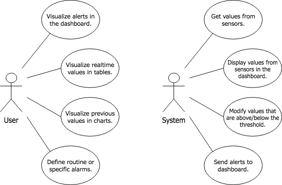
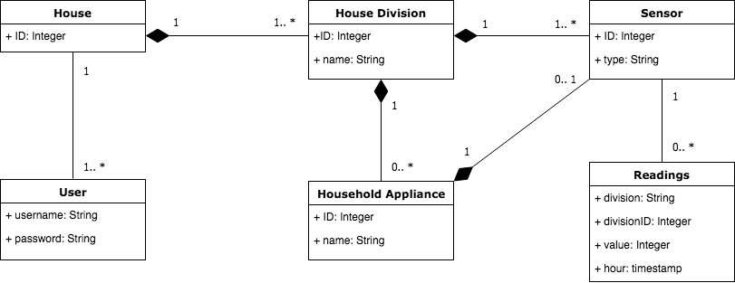

Specification¶
Project Scope¶
Domotics is a platform that allows the management and monitoring of smart homes. The user has the possibility to control the environment of his house using our dashboard. It is also possible to set alerts so that important events of the month are not missing or if there is a change, you can change it.
In addition, our platform is flexible and controls various sensors such as temperature, humidity, CO2 levels, movement and even let’s you know the energy consumption of existing household appliances. The platform allows the addition of more sensors if the user sees the need and has a brightness actuator for defined divisions. Since everything is digital today, you can use access our application in any web browser.
Features, System Scenarios and Processes¶
Features¶
- FE-1: Show every data from the sensors in real-time in tables.
- FE-2: Check previous values of the past hours in charts.
- FE-3: Send alerts when the values are above/below the threshold.
- FE-4: Define alarms (routine alarms or specific events).
- FE-5: Be able to make changes depending on values read from sensors.
Actors/Use Cases/Stories¶
Actors
- User: a person who uses the dashboard and the system.
- System: the entity that makes “intelligent decisions” based on the information received from the sensors.
Use Cases
- UC-1: Visualize alerts in the dashboard.
- UC-2: Visualize real-time values in tables.
- UC-3: Visualize previous values in charts.
- UC-4: Define routine or specific alarms.
- UC-5: Get values from sensors.
- UC-6: Display values from sensors in the dashboard.
- UC-7: Modify values that are above/below the threshold.
- UC-8: Send alerts to dashboard.
Figure 8: Use Cases
User Stories
- US-1: As a user I want to access the dashboard so I can see real-time information in tables.
- US-2: As a user I want to navigate in the dashboard to analize previous information in charts.
- US-3: As user I want to be alerted if there are strange values in some parameters.
- US-4: As a user I want to check important events in my calendar.
- US-5: As a user I want to check the average of the values obtained by the sensors in my house.
Data Model¶
In this section it will be described the concepts and relations used in the high level representation of the platform data model.
In our system, there are 5 different types of sensors presented in the following table along with the respective type the values of the sensors are read:
Sensor’s values¶
| Name | Type |
|---|---|
| Temperature | ºC |
| Humidity | % |
| CO2 | ppm |
| Energy | W/h |
| Movement | boolean |
| Luminosity | boolean |
In each division of the house, there are temperature, humidity, CO2, movement and luminosity sensors. The energy sensors are placed in the household appliances and register the the energy consumption of each appliance they are connected.
The sensors return to the user: which division the sensor is placed at (kitchen, living room, bathroom, etc), the respective division’s id (any number starting from 1 to N, where N is the total divisions of the house), the value of the sensor and the time the value was read from the sensor.
Users of the system are defined by their credentials of access (username/password).
In the following figure, it’s possible to see the data model of our system:
Figure 9: Data Model